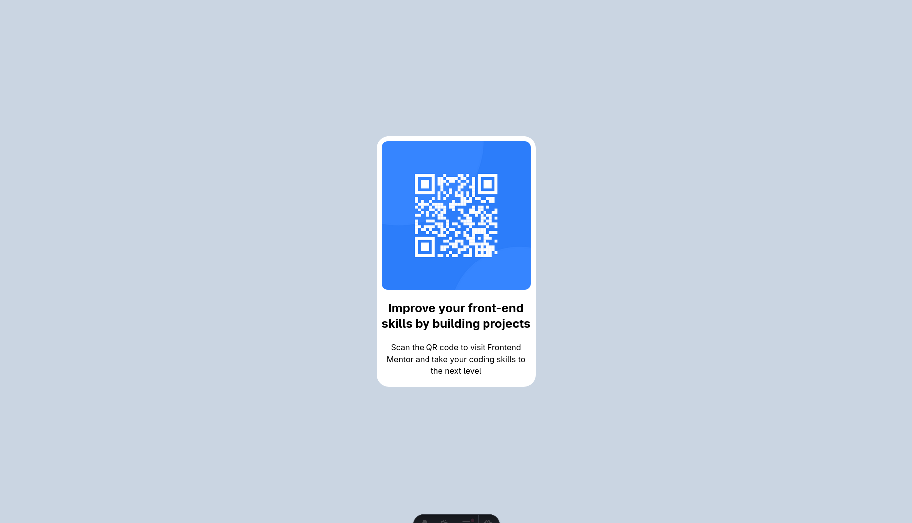
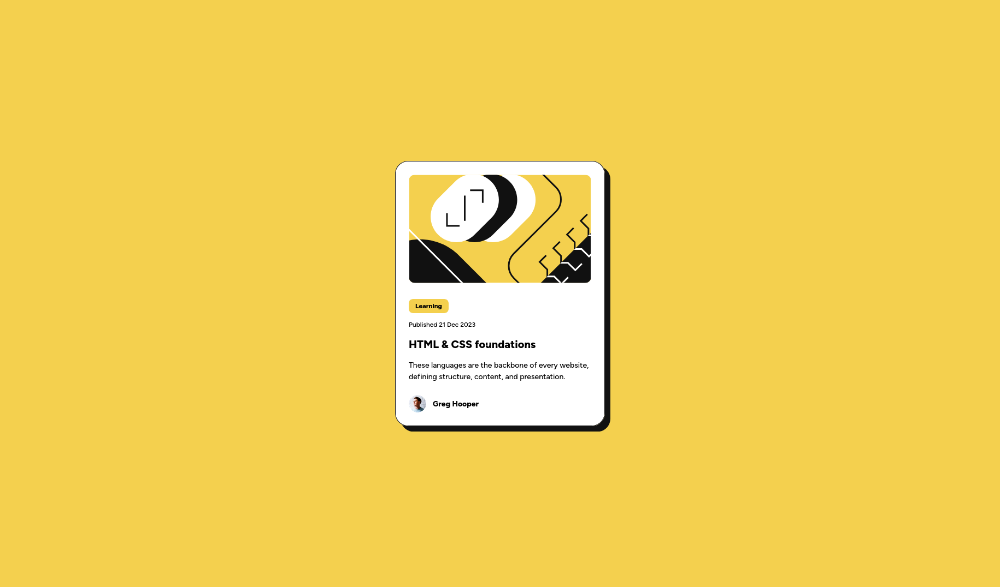
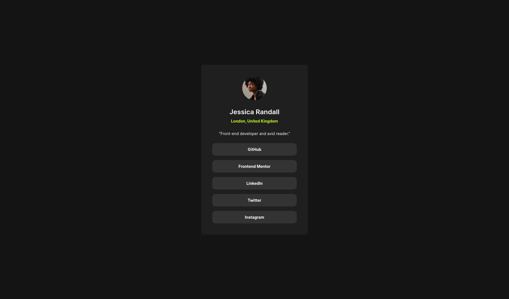
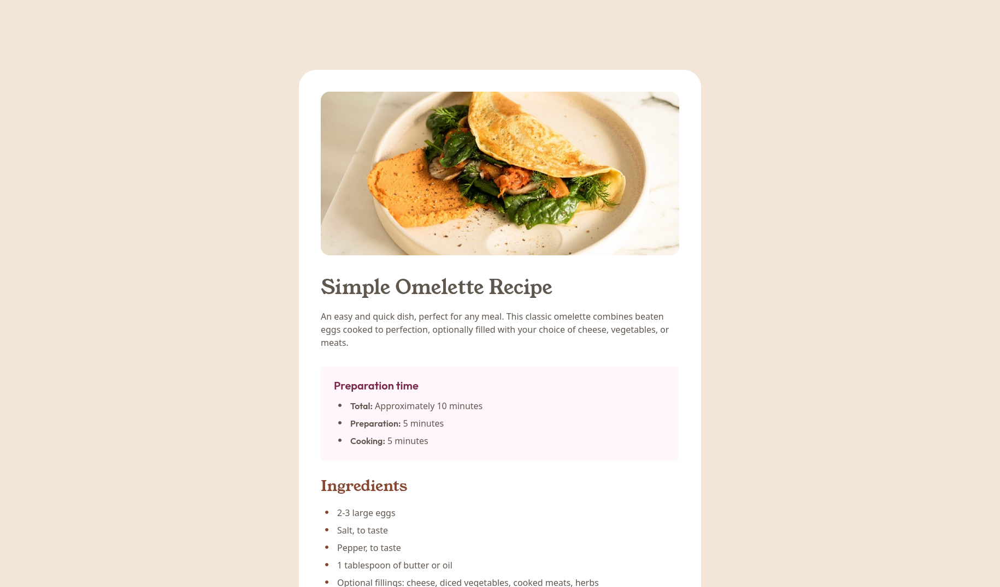
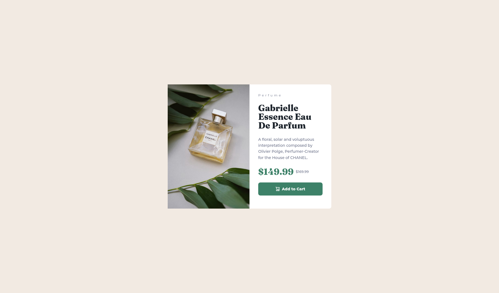
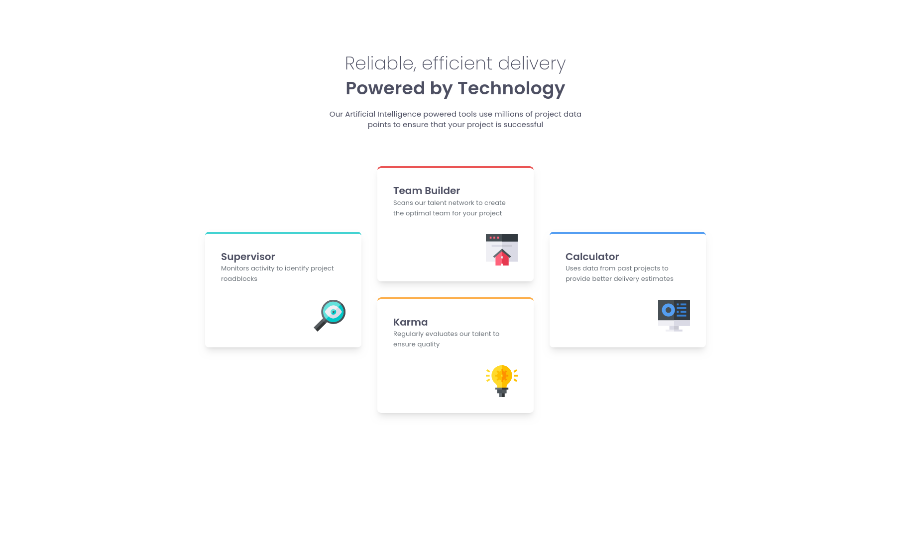
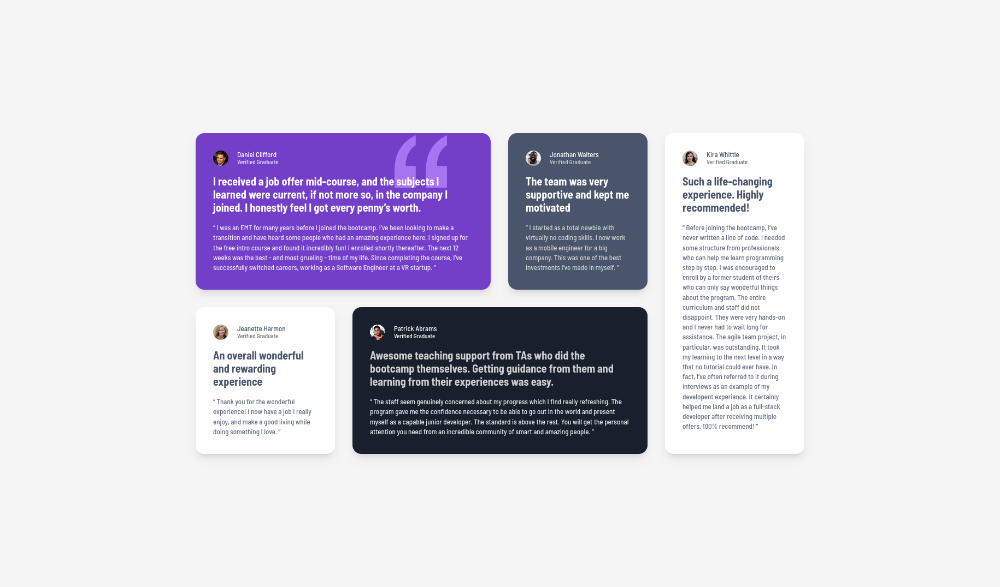
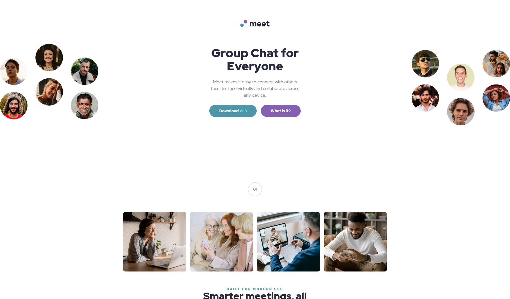
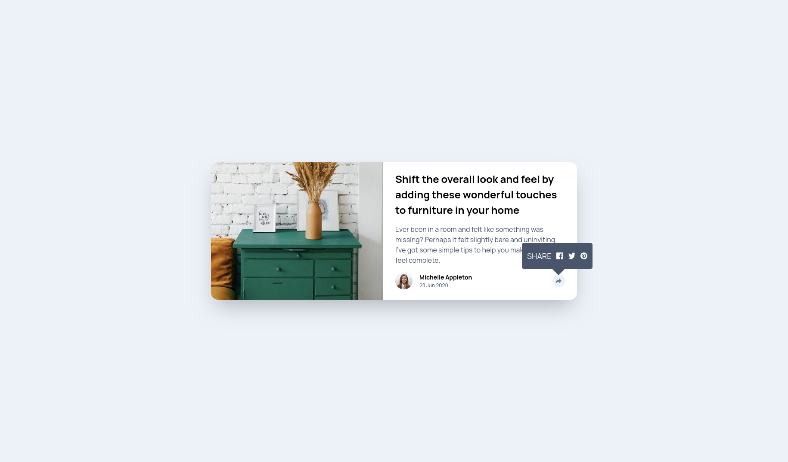

Frontend Mentor
Retos del repositorio
Colección de soluciones por carpeta. Cada tarjeta muestra la captura, el nivel del reto en Frontend Mentor (Newbie o Junior) y enlaces a la solución publicada, la vista previa en vivo y el código en GitHub.
Parte 1: este índice está pensado para fortalecer y practicar HTML, CSS, JavaScript y Tailwind CSS (fundamentos en el navegador, sin paso de build obligatorio). La parte 2, más avanzada y alineada con un flujo profesional, la he desarrollado en Next.js, que puedes ver en el siguiente botón.
Parte 2 — Retos en Next.jsDos enfoques, misma plataforma de practica
Este repositorio (vanilla) está pensado para reforzar HTML, CSS y JavaScript en el navegador: una carpeta por reto, sin framework, ideal para dominar layout, cascada, accesibilidad y JS básico.
Junto a él suele vivir el proyecto frontend-mentor-nextjs: la misma línea de desafíos, pero con Next.js para practicar rutas, componentes React, datos tipados y un flujo más cercano al que verías en un entorno profesional.
En GitHub Pages la URL base es
.
Cada reto vive en su propia ruta bajo ese origen.
Proyectos
-
Newbie
-

NewbieBlog preview card
/blog-preview-card/ -

NewbieSocial links profile
/social-links-profile/ -

NewbieRecipe page
/recipe-page/ -

NewbieProduct preview card
/product-preview-card-component/ -

NewbieFour card feature section
/four-card-feature-section/ -

JuniorTestimonials grid section
/testimonials-grid-section/ -

NewbieMeet landing page
/meet-landing-page/ -

NewbieArticle preview component
/article-preview-component/